Mit den Substitutionen
lassen sich für die JACOBIschen Funktionen die in der folgenden Tabelle aufgeführten Eigenschaften angeben, wobei m und n beliebige ganze Zahlen sind.
| Perioden 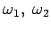 |
Nullstellen | Pole | |
| snz | 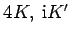 | 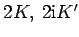 | 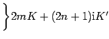 |
| cnz | 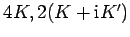 | 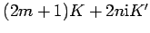 | |
| dnz | 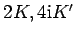 | 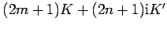 |
Der Verlauf von snz, cnz und dnz ist in der folgenden Abbildung dargestellt.
Außerhalb ihrer Polstellen gelten für die JACOBIschen Funktionen die folgenden Beziehungen:
| 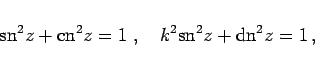 | (14.108) |
| 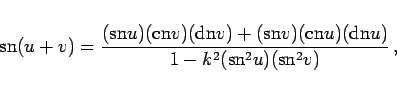 | (14.109a) |
| (14.109b) |
| 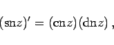 | (14.110a) |
| 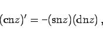 | (14.110b) |
Weitere Eigenschaften der JACOBIschen und weiterer elliptischer Funktionen s. Lit. 14.10, 14.18.